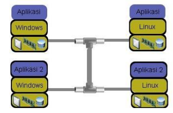

Singkatan dari IaaS adalah...
a. Infrastructure as a service
b. Infrastructure as a server
c. Implimentasi as a service
d. Implementasi as a server
Perhatikan gambar dibawah ini

Gambar diatas menjelaskan tentang...
a. Implementasi komputer
b. Program komputer
c. Arsitektur komputer secara tradisional/standalone
d. Infrastruktur komputer
Perhatikan gambar dibawah ini
Gambar diatas adalah...
a. Memory
b. CPU
c. Storage
d. Interconnect
Perhatikan gambar dibawah ini
Gambar diatas adalah...
a. Memory
b. Storage
c. CPU
d. Interconnect
Hypervisor adalah...
a. Jantung komputer
b. Storage pada software
c. Memory komputer
d. Peranan utama dalam infrastruktur virtualisasi
Provider membagi IaaS dalam beberapa kategori yaitu...
a. 9
b. 8
c. 7
d. 6
Layanan penghubung yaitu...
a. Server template
b. Automation
c. Remote control
d. Virtualisasi network
Jantung dari teknologi cloud computing adalah...
a. Network
b. Automation
c. Virtualisasi
d. Remote control
Singkatan dari VDI adalah...
a. Virtual desktop interface
b. Virtualisasi desktop interface
c. Virtual desktop implementasi
d. Virtual deskripsi interface
Contoh software virtualisasi yaitu...
a. Storage
b. Memory
c. CPU
d. Vmware,citrix